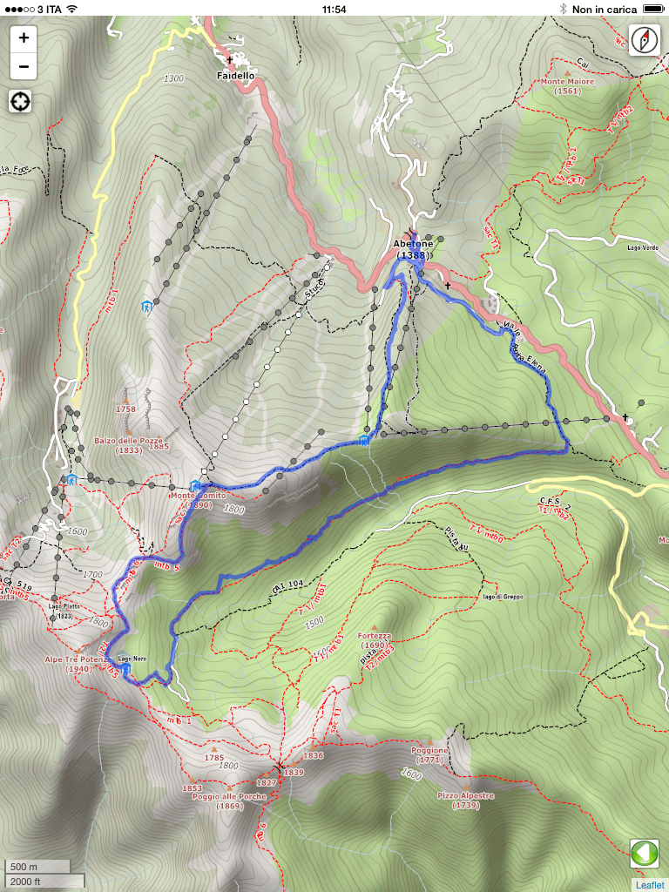

Instructions

This application contains the thematic cartography for excursion use of an area of about 25x25 Km. Since in the mountains the Internet coverage service on mobile phones is not guaranteed (or in any case slow) these data are incorporated within the application and always available. (NB: cartography in full detail is available between Pracchia and Abetone. Route 23 is covered but less detailed information
With normal smartphone/tablet gestures, you can move the displayed map or zoom in for more details even outside the path you are following in order to have information on the peaks that surround you or on the upcoming difficulties of the route.
To go back to viewing the trail card you can click the green icon of the white arrow on the left . On Android you can also use the Back button in the menu at the bottom of the screen
By enabling the GPS positioning of your phone/tablet before starting the application, it is possible to center the map on your current position and also track your movements.
To get this just press the button and wait for the image changes showing a red dot in the center . The position will be displayed when using a red dot on the map
A compass is also available in the IOS version with red tip which indicates the Geographic North.
In the lower right corner you will find the distance scale bar reference in miles and kilometers